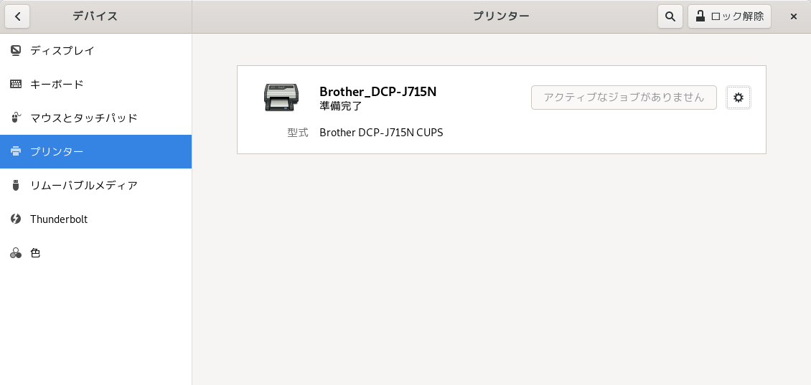

Debian busterでBrotherプリンタを使用する
手順について
- およそ以下のページで説明されている手順を踏襲します。
- LinuxでBrother製プリンターを使う <URL:http://note.kurodigi.com/post-0-30/>
- 自分の環境と違うところを中心にメモします。
環境
- 自分の環境は次のとおりです。
プリンタ側の無線LAN設定はすでに設定済みのものとします。
プリンタ: Brother DCP-J715N OS: Debian buster (10.7.0) プリンタの接続: 無線LAN
1. 準備
1.フォルダの構成
/var/spool/lpdはなかったので作成しました。$ sudo mkdir -p /var/spool/lpd
- 一方、
/usr/share/cups/modelはあったので何もせず。
2. 32bit ライブラリのインストール
手順どおりに以下のコマンドを実行します。
$ sudo apt install -y ia32-libs
ところが、
ia32-libsは有効ではないと言われてしまいます。$ sudo apt install -y ia32-libs パッケージリストを読み込んでいます... 完了 依存関係ツリーを作成しています 状態情報を読み取っています... 完了 パッケージ ia32-libs は使用できませんが、別のパッケージから参照されます。 これは、パッケージが欠落しているか、廃止されたか、または別のソース からのみ利用可能であることを意味します。 しかし、以下のパッケージが置き換えます: lib32z1 E: パッケージ 'ia32-libs' にはインストール候補がありません
そこで上記で指示されたパッケージをすることにします。
$ sudo apt install -y lib32z1 パッケージリストを読み込んでいます... 完了 依存関係ツリーを作成しています 状態情報を読み取っています... 完了 以下の追加パッケージがインストールされます: libc6-i386 以下のパッケージが新たにインストールされます: lib32z1 libc6-i386
3. /usr/lib/cups/filter は存在していたので省略
2. プリンタのドライバ
- Brother の HP からダウンロード（ソフトウェアダウンロード(DCP-J715N)）
- 今回使用したのは、以下の2つのドライバです
- LPR プリンタードライバー (deb package):
dcpl715nlpr-1.1.3-1.i386.deb - CUPSwrapper プリンタードライバー (deb package):
dcpl715ncupswrapper-1.1.3-1.i386.deb
- LPR プリンタードライバー (deb package):
3. gdebi のインストール
gdebi が入っていなかったので、まずはインストールします。
$ sudo apt install -y gdebi
その後、ダウンロードしたドライバをインストールしようとしてみますが。。。
$ sudo gdebi dcpj715nlpr-1.1.3-1.i386.deb Reading package lists... Done Building dependency tree Reading state information... Done このパッケージはインストールできません Wrong architecture 'i386' -- Run dpkg --add-architecture to add it and update afterwards
そこで調べてみると、以下のようなページがヒットしました。
- <URL:https://stackoverflow.com/questions/30236342/debian-stretch-and-jessie-32-bit-libraries>
- その指示のとおりに打鍵してみます。
- 64bit版のPCに、32bit用のドライバを入れようとしたのでまずかったようです。
$ sudo dpkg --add-architecture i386 $ sudo apt update $ sudo apt install -y build-essential gcc-multilib rpm libstdc++6:i386 libgcc1:i386 zlib1g:i386 libncurses5:i386
- 再度 gdebi によるインストールを実施するとうまくいきました。
後者の cups のほうをインストールした時点でプリンタが追加されました。
$ sudo gdebi dcpl715nlpr-1.1.3-1.i386.deb $ sudo gdebi dcpl715ncupswrapper-1.1.3-1.i386.deb
- しかし、自動で追加されたほうではテスト印刷が出来なかったので、CUPSでちゃんと設定しないといけないようです。
- localhost:631 で CUPSページを開き、プリンタの追加から設定します。
- これで、テストページの印刷もできました。お疲れ様でした。
